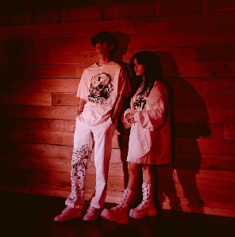
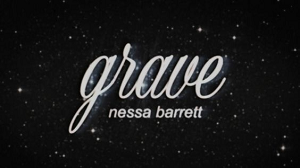

Nessa Barrett
¿Quien Es?
Nessa Barrett es una cantante y compositora
estadounidense de Nueva Jersey. Barrett saltó
a la fama en la aplicación para compartir
videos TikTok en 2019.Es de raíces
puertorriqueñas.
Su carrera musical
Carrera Musical
Barrett comenzó su carrera musical en julio de 2020,
cuando lanzó su primer sencillo basado en piano "Pain".
El sencillo debut de Barrett fue lanzado poco después de
firmar con Warner Records.Barrett continuó su carrera
musical, con la intención de encarnar un "tipo de
ambiente oscuro y punk rock",con el lanzamiento de su
segundo sencillo "If U Love Me" en octubre de 2020.
Poco después, Barrett siguió la canción.Con una
interpretaciónoscura de "Santa Baby",lanzada en
diciembre de 2020. En febrero de 2021, Barrett lanzó la
canción "La Di Die",Travis Barker . Barrett y su
colaborador Jxdn, junto con Barker.
Cancion Representativa
Cancion mas famosa
La canción mas representativa es “la di die” que es
interpretada con jxnd,y es escrita por nessa, con 39
millones de vistas.Esta canción toca el tema de la
fama,de que mucha gente ve la fama como algo genial
y fabuloso, cuando en realidad ella y jaden dicen que
es un lugar “oscuro y malvado”

Cancion Favorita
Cancion Favorita
Mi cancion favorita entre todas las que tiene es "grave",
donde se trata de la llegada de una persona que ayuda a
salir de la depresion o de una oscuridad, donde en esa
epoca no era feliz, pero llega la persona y ayuda a salir
de todos estos problemas.
